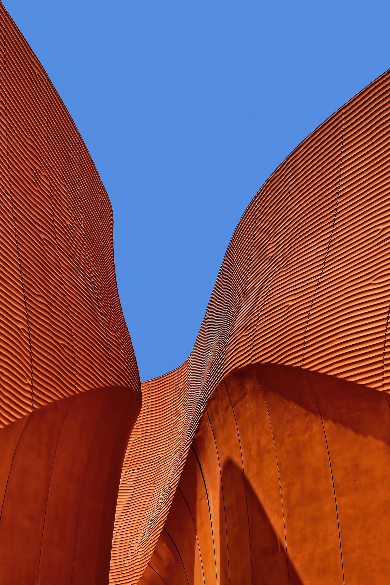
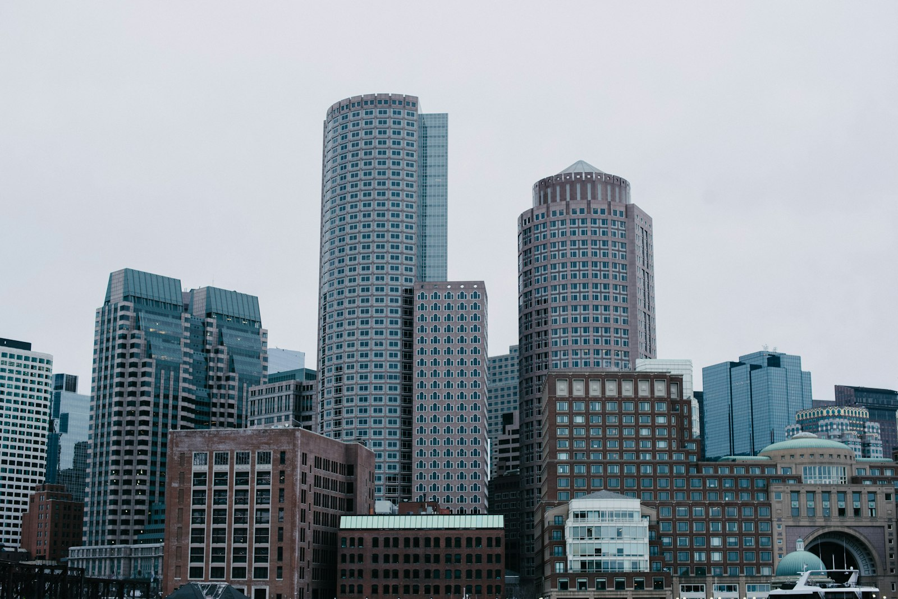
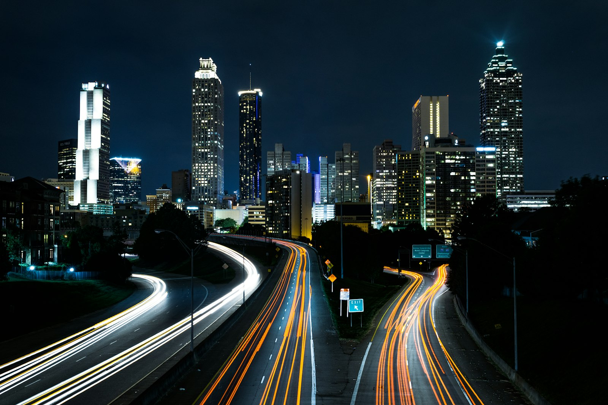

Six distinct directions for the new website.
Each is a full, clickable, image-led website built in the spirit of apple.com — clean and calm, but now with a little life: scroll reveals, a sticky product story, a horizontal project reel, a filterable portfolio, count-up stats and more. Every concept is genuinely different in layout and behaviour, all under one placeholder brand so you compare structure and feel, not content. Each page also links out to real sites in the same spirit. Open any card to explore it, then tell us which to take forward.
Image-led & cinematic
Photography does the talking
Product Story
Apple-style narrative: sticky pinned "how we build" sequence, parallax hero, count-up stats, bento services. The polished, mainstream choice.
Open concept
Cinematic (Dark)
Fullscreen pinned scenes, ken-burns zooms and a drag-to-scroll project reel. The most dramatic, immersive option.
Open conceptEditorial & warm
Quiet-luxury, magazine feel
The Journal
A real magazine: masthead, multi-column long-read with drop cap, journal grid, interview, reading progress bar and newsletter sign-up.
Open conceptStudio Portfolio
Work-first: a filterable project grid (Residential / Civic / Workplace), click-to-open lightbox, team section and live availability dot.
Open conceptStructured & engineered
Discipline you can see
Structured Index
Everything on a visible engineering grid: capability matrix, animated process timeline, numbered register, live clock. Reads "built, not decorated."
Open conceptBold Typographic
Oversized type, scrolling marquee, skew-on-hover project list, a light/dark invert toggle and a custom cursor. The boldest, most memorable.
Open concept